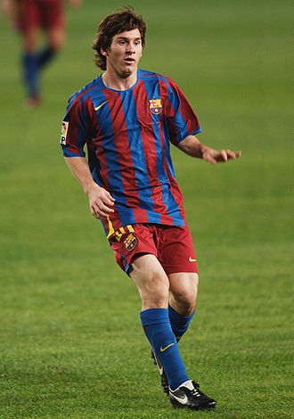

Comenzó la pretemporada 2004-2005 jugando amistosos con el primer equipo: Contra el Palamós el 20 de julio en el Camp Nou, en el minuto '74, anotó su primer gol, que puso el 0-4 parcial de un partido que el Barcelona ganó 0-6. Messi jugó su primer partido oficial el 16 de octubre, el derby barcelonés contra el Espanyol en el estadio Olímpico Lluís Companys, cuando sustituyó a Deco ocho minutos antes de terminar el encuentro. Con diecisiete años, tres meses y veintidós días, se convirtió en uno de los canteranos más jóvenes en debutar en La Liga. En un partido de La Liga contra el Albacete Balompié el 1 de mayo de 2005, tras asistencia de Ronaldinho, Messi anotó, de vaselina, su primer gol oficial,

Lionel Messi y Cristiano Ronaldo en "El Clasico" de 2010 donde el Argentino dio 2 asistencias a David Villa y estuvo imparable en ese partido el cual termino 5-0 a favor del equipo cule.